Weixun Wang
王维埙
Reinforcement Learning & Agentic AI
I am currently a reinforcement learning researcher at Alibaba, where I focus on applying RL to enhance LLM reasoning capabilities and develop agentic AI systems. My research explores how reinforcement learning can improve the decision-making and problem-solving abilities of large language models in complex, multi-step tasks. Previously, I worked at NetEase Games Fuxi AI Lab, where I applied reinforcement learning throughout the game development lifecycle. I completed my Ph.D. at Tianjin University under the supervision of Professor Jianye Hao. I am passionate about the transformative potential of (multi-agent) reinforcement learning and believe it will continue to reshape our world in profound ways.

Research
I have an interest in using deep reinforcement learning in multi-agent systems. I believe that MAS (Multi-Agent) is a more realistic description of the (large) problem in the real world. I also believe that deep reinforcement learning can solve more complex practical problems in the MAS field.
Selected Publications
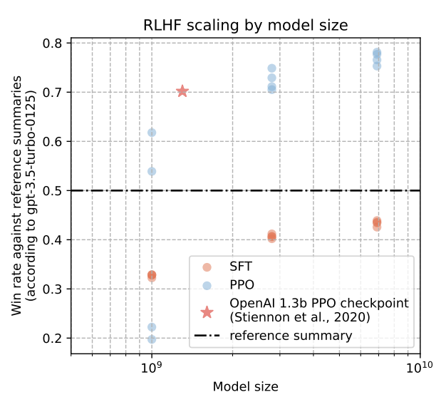
This work is the first to openly reproduce the Reinforcement Learning from Human Feedback (RLHF) scaling behaviors reported in OpenAI's seminal TL;DR summarization work. We create an RLHF pipeline from scratch, enumerate over 20 key implementation details, and share key insights during the reproduction.
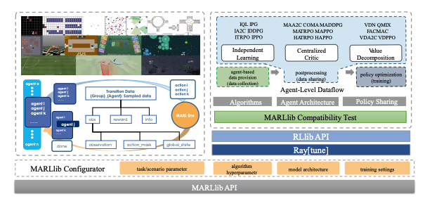
We present MARLlib, a library designed to address the challenge of fast and compatible development for multi-agent tasks and algorithm combinations. The library features a standardized multi-agent environment wrapper, agent-level algorithm implementation, and flexible policy mapping strategy.
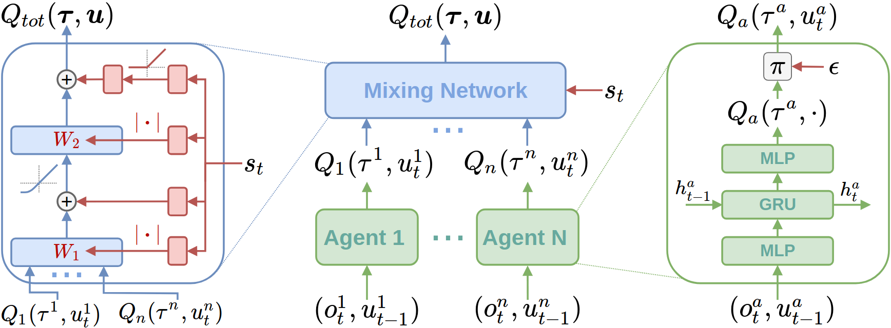
We found that by improving the implementation techniques of QMIX we can enable it to achieve state-of-the-art on the StarCraft Multi-Agent Challenge (SMAC) testbed. We also explored the key factor of the monotonicity constraint of QMIX.
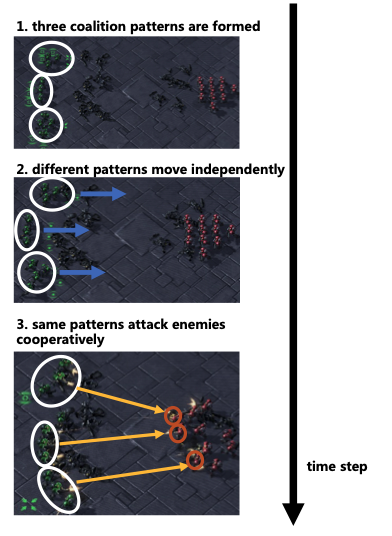
We propose a level-adaptive MARL framework called "LA-QTransformer", to realize the knowledge transfer on the coordination level via efficiently decomposing the agent coordination into multi-level coalition patterns for different agents.
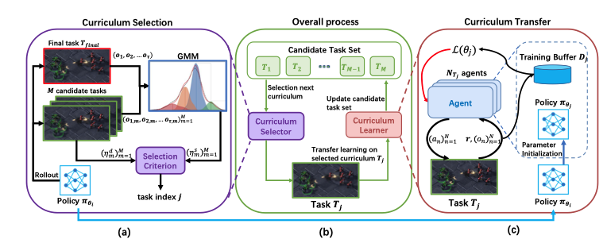
We propose a novel ACL framework, PORTAL, for MASs. PORTAL selects curricula based on task difficulty and similarity to the final task, enabling agents to master extremely hard cooperative tasks.
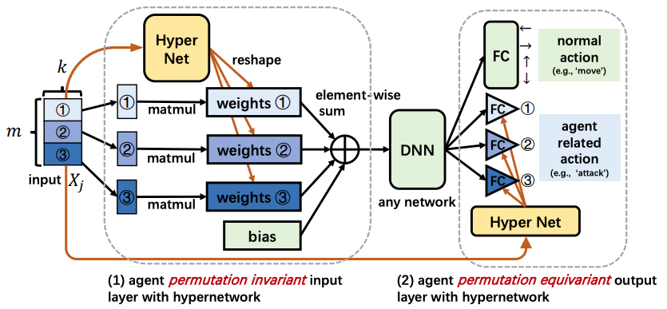
We propose two novel designs to achieve permutation invariance. Empirical results on the SMAC benchmark show that the proposed method achieves 100% win-rates in almost all hard and super-hard scenarios.
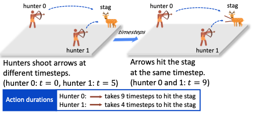
We propose LeGEM, a novel episodic memory for model-free MARL algorithms. LeGEM boosts multi-agent learning by addressing the challenging temporal credit assignment problem raised by off-beat actions.
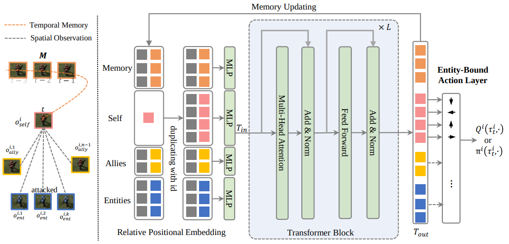
We propose the Agent Transformer Memory (ATM) network with a transformer-based memory. ATM utilizes the transformer to enable the unified processing of the factored environmental entities and memory.
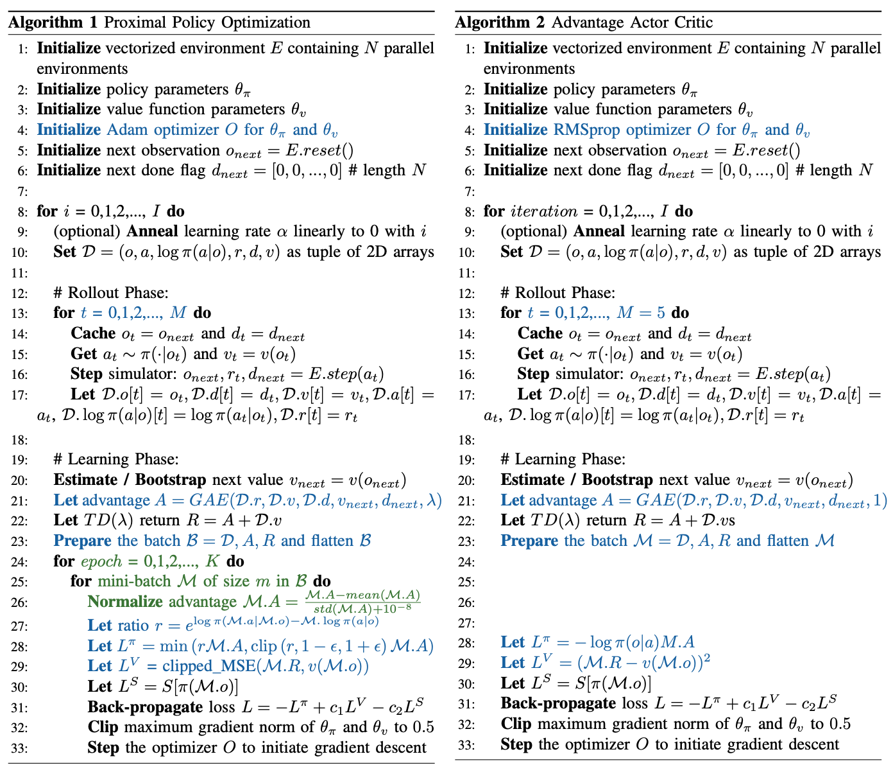
We show A2C is a special case of PPO. We present theoretical justifications and pseudocode analysis to demonstrate why, validated through empirical experiments.
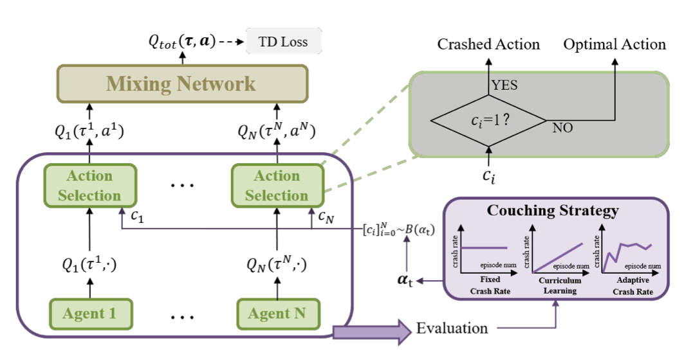
We propose a coach-assisted multi-agent reinforcement learning framework, which introduces a virtual coach agent to adjust the crash rate during training to enhance system robustness.
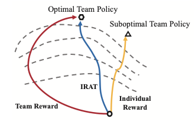
We propose Individual Reward Assisted Team Policy Learning (IRAT), which learns two policies for each agent from dense individual reward and sparse team reward with discrepancy constraints.
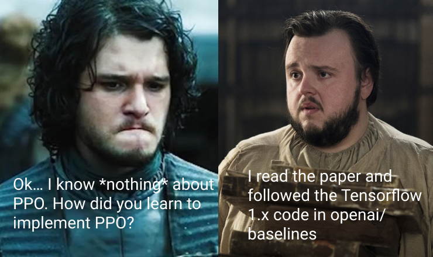
This blog post focuses on delivering a thorough reproduction of PPO, aggregating, documenting, and cataloging its most salient implementation details to help people understand PPO faster and better.
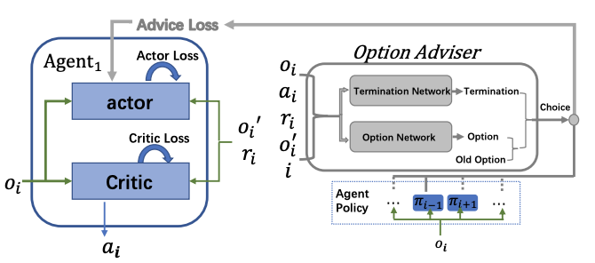
We propose a novel Multiagent Policy Transfer Framework (MAPTF) to improve MARL efficiency by modeling multiagent policy transfer as the option learning problem.
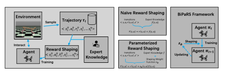
We formulate the utilization of shaping rewards as a bi-level optimization problem and propose three learning algorithms that can fully exploit beneficial shaping rewards.
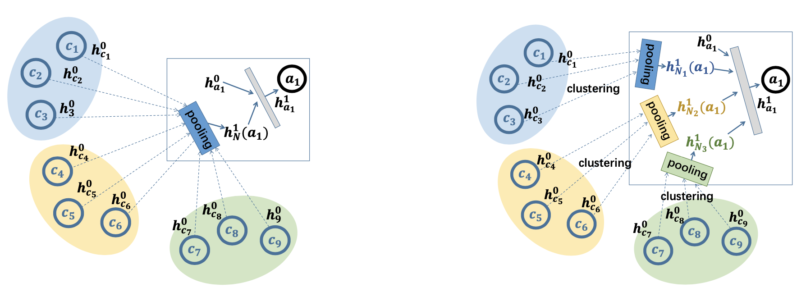
We propose NeuSearcher which leverages knowledge learned from previous instances to solve new problem instances, achieving 2-3x speedup while maintaining solution quality.
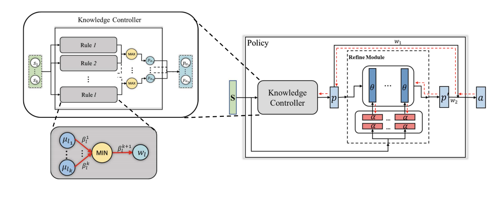
We propose knowledge guided policy network (KoGuN), a novel framework that combines human prior suboptimal knowledge with reinforcement learning through a fuzzy rule controller.
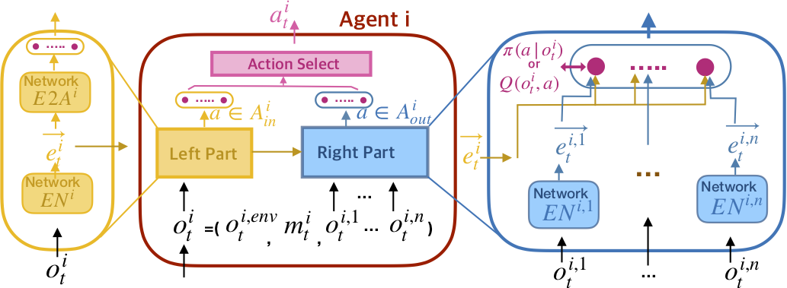
We propose Action Semantics Network (ASN), a novel network architecture that explicitly represents action semantics between agents using neural networks.
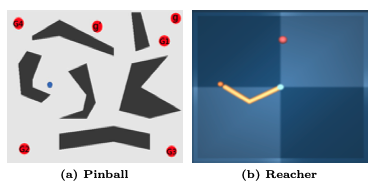
We propose a novel Policy Transfer Framework (PTF) to accelerate RL by taking advantage of this idea. Our framework learns when and which source policy is the best to reuse for the target policy.
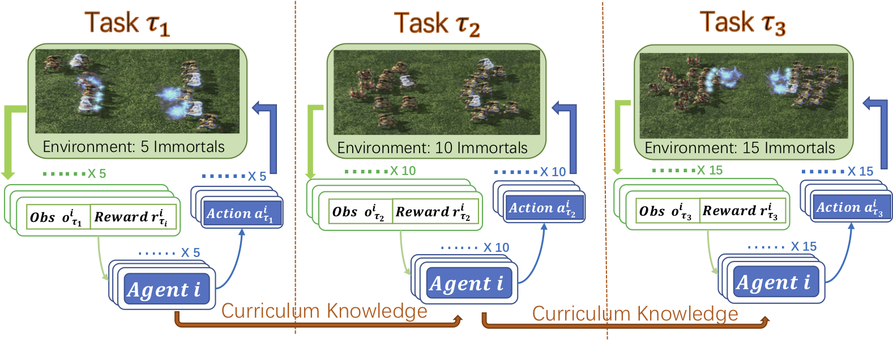
We design a novel Dynamic Multiagent Curriculum Learning (DyMA-CL) to solve large-scale problems by starting from learning on a multiagent scenario with a small size and progressively increasing the number of agents.
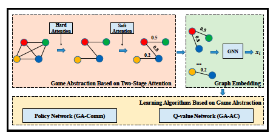
We model the relationship between agents by a complete graph and propose a novel game abstraction mechanism based on two-stage attention network (G2ANet), which can indicate whether there is an interaction between two agents.
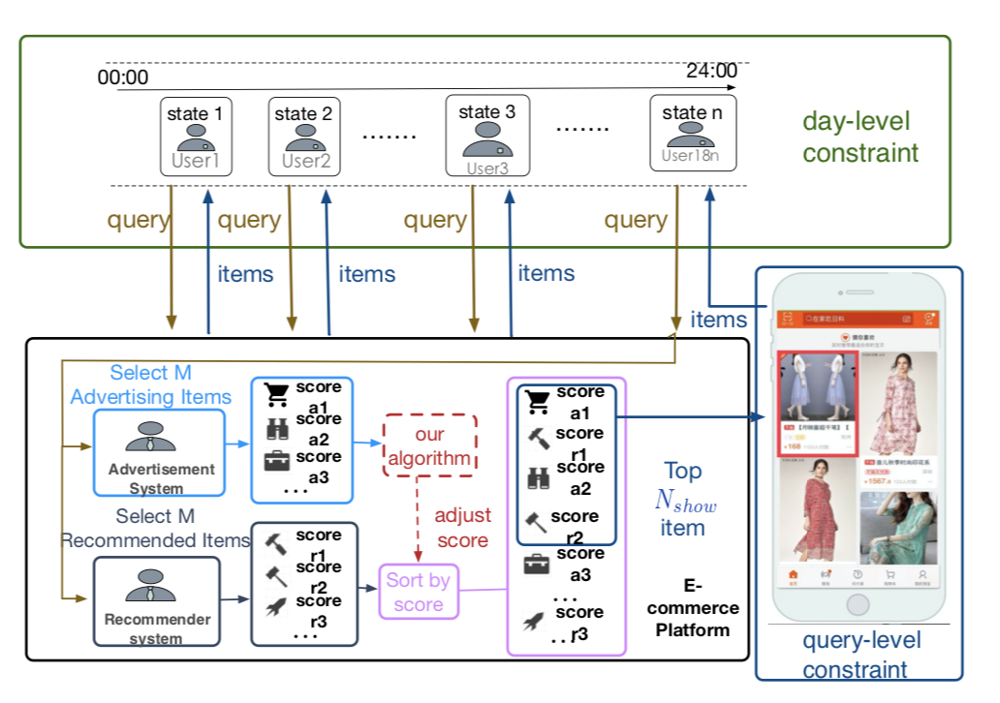
We investigate the problem of advertising with adaptive exposure, in which the number of ad slots and their locations can dynamically change over time based on their relative scores with recommendation products.
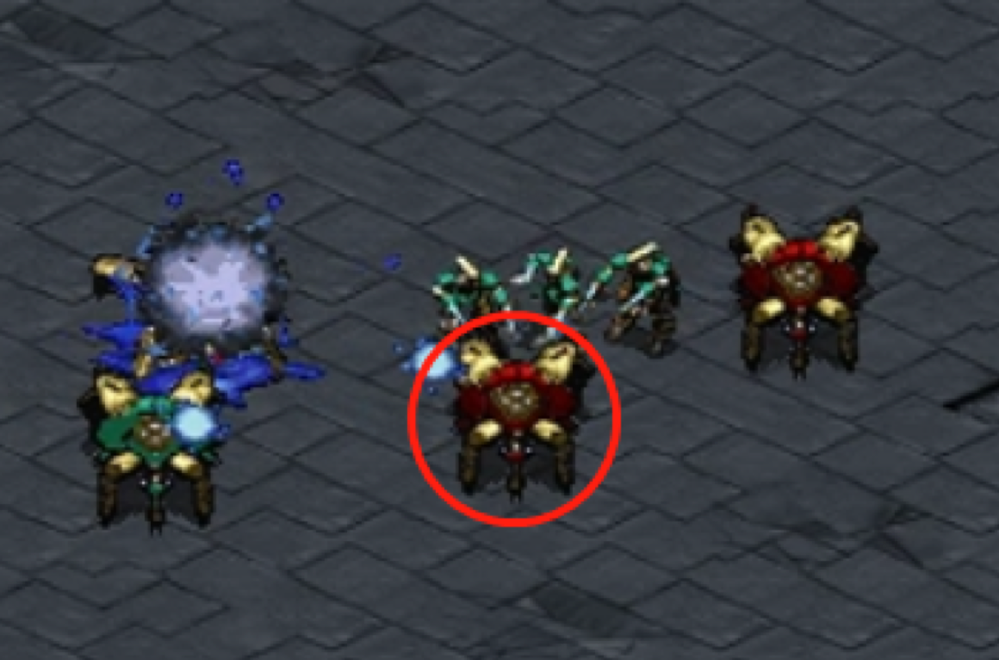
The first to combine self imitation learning with GAIL and propose a novel framework IGASIL to address the multiagent coordination problems.
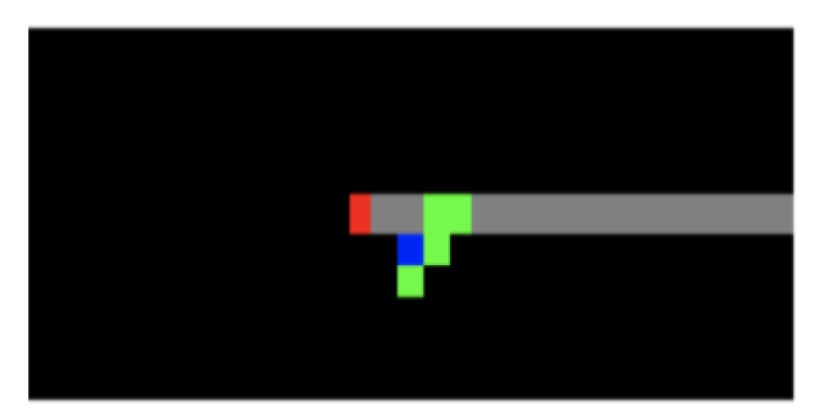
In this work, we propose a deep multiagent reinforcement learning approach that investigates the evolution of mutual cooperation in SPD games.